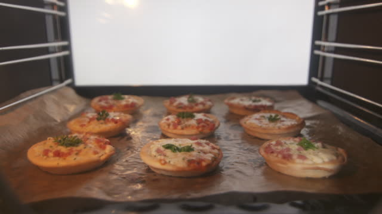
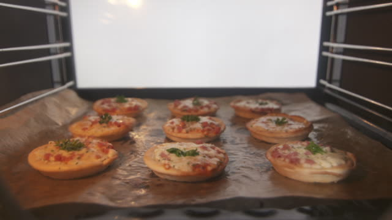

The Mini Pizza is a small version of pizza that is bit sized and flavored with mozzarella cheese and bacon that is perfect for snack.
Ingredients
- 2 sheets puff pastry, defrosted
- 1/2 cup pasta sauce
- 1 1/2 cups mozzarella cheese, grated
- 100g bacon, diced
- 4 cherry tomatoes, halved
Procedure
Step 1: Preheat oven to 230°C (210°C fan-forced).
Step 2: Cut 4 x 12cm diameter circles from each pastry sheet. Place on 2 oven trays lined with baking paper.
Step 3: Spoon pasta sauce onto each circle, spreading it thinly, leaving a border of pastry. Sprinkle cheese onto sauce and top with bacon. Finally, place a halved cherry tomato in the centre of each.
Step 4: Bake for 12 minutes until cheese has melted and pastry is puffed and golden.
Step 5: Serve and Satisfy your cravings!